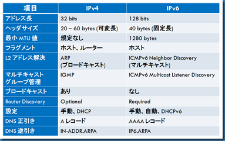
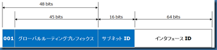
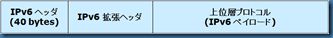
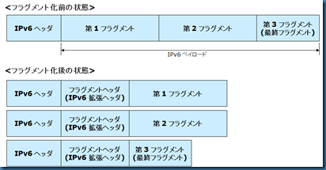

本記事は 2010 年 6 月 11 日に公開された記事を本ブログに移行した記事になります。
こんにちは。Windows プラットフォーム サポートです。
本シリーズでは、Windows Server 2008 / Vista 以降の OS で標準搭載された IPv6 について解説します。
IPv6 の必要性については、IPv4 のグローバルアドレス枯渇や NAT による延命措置を根本的に解決するテクノロジーとして何年も前から唱えられてきました。それにも関わらず、エンタープライズネットワークにおいて IPv6 の必要性やメリットを身近に感じることはなく、今のところ導入事例もほとんどないというのが実情かと思います。ネットワーク機器側の対応に比べ、端末 (OS やアプリケーション) 側での対応が遅れていたことや IPv6 導入の決め手となるアプリケーションの不在という点が要因として挙げられるのではないかと思います。
しかしながら、Windows Server 2008/Windows Vista 以降の OS では、IPv6 がデフォルトで有効化されており、ユーザーが意図的に使うつもりはなくても、優先的に使用されるという実装となりました。このことから、端末 (OS) 側での IPv6 本格対応をきっかけとして、IPv6 システム導入の本格化への期待、もしくは予期せぬトラブル発生という可能性にも考慮しつつ、本シリーズでは IPv6 の基本的な動き、不要な場合の無効化方法、Windows でのテスト環境構築方法などについて紹介していくことを考えています。
IPv6 というと、アドレスの長さや読みにくさ故に、何となく難しいイメージを助長しているように思われますが、IPv4 と比較しながら考えることでずいぶん理解しやくなると思います。そのことから、第一回の本稿では、まず IPv6 の一般的な機能の概要について、IPv4 からの主な変更点を元に解説します。Windows における IPv6 機能の詳細については、次回以降の投稿にて順次ご紹介の予定です。
IPv4/IPv6 機能比較
最初に、IPv4 と IPv6 の主な差異や機能の対比を以下の表にまとめました。

それぞれの項目について、以下に簡単に説明します。(詳細は、次回以降でもご説明の予定です。)
アドレス長
ご存知のとおり、IPv6 では、IPv4 におけるアドレス空間の不足に対応するため、アドレス長が 128 bits と増大されました。
IPv6 アドレスのフォーマットは、例えば、グローバル ユニキャスト アドレスであれば以下のとおりです (RFC 3587 参照)。

なお、グローバルアドレスやリンクローカルアドレスなど、Windows が取得する各 IPv6 アドレスの種類は、次回の投稿にて解説したいと思います。
ヘッダサイズ
IPv4 では、ヘッダサイズがオプションの有無によって、20 ～ 60 bytes の範囲で可変長 (通常は、オプション無しで 20 bytes) となっています。
IPv6 では、ヘッダサイズは 40 bytes で固定長となり、オプション機能 (フラグメント等) は拡張ヘッダとして定義されました。IPv6 パケットの基本的な構造は以下のようになります。

最小MTU 値
IPv4 では、最小 MTU 値は規定されず、少なくとも 576 bytes のパケットを処理できることが要求されています (required)。
IPv6 では、IPv6 対応機器の全てのリンクで、MTU は最小でも 1280 bytes であることが必要とされています (must)。
フラグメント
IPv4 では、TCP 以外の通信 (正確には、IP ヘッダ内の DF bit が 0) の場合、MTU 値を超えるパケットは、ホスト、又はルーターにて IP レイヤーでのフラグメントが発生しました。
IPv6 では、ルーターでのフラグメントは許可されず、MTU 値を超えるパケットは、ホストでのみフラグメントされます。IPv6 パケットがフラグメントされる場合、IPv6 拡張ヘッダが使用され、以下のようなパケット構造となります。

L2 アドレス解決
IPv4 では、IPv4 アドレスから MAC アドレスの解決のために、ブロードキャストの ARP が使用されます。
IPv6 では、ブロードキャストが廃止され、IPv6 アドレスから MAC アドレスの解決のために、マルチキャストの ICMPv6 Neighbor Discovery を使用します。ICMPv6 Neighbor Discovery の詳細は次回以降に紹介の予定です。
マルチキャストグループ管理
マルチキャストアドレスグループに Join しているメンバー管理のために、IPv4 では IGMP (Internet Group Management Protocol) が使用されます。
IPv6 では、IGMP に代わり、ICMPv6 Multicast Listener Discovery (MLD) が使用されます。
ブロードキャスト
IPv6 では、ブロードキャストが廃止され、ユニキャスト、マルチキャスト、エニーキャストが使用されます。
Router Discovery
IPv4 の ICMP Router Discovery はほとんど使用されていませんでしたが、IPv6 では Router Discovery の実装が要求されています。
IPv6 では、ICMPv6 Router Solicitation (ホストが送信するリクエスト)、Router Advertisement (ルータが送信する通知) のやり取りにより、ホストがアドレスの自動構成に使用するプレフィックス、DHCPv6 の使用を定義するフラグ、MTU 値など様々な情報を取得します。
IP アドレス設定
IPv4 では、手動や DHCP により IP アドレスを設定します。
IPv6 では、手動や DHCPv6 に加え、ICMPv6 Router Advertisement により通知されるプレフィックスから、自動で IPv6 アドレスを構成することができます。また、DHCPv6 の使用についても、Router Advertisement 内のフラグ (M/O フラグ) によりホストの挙動が制御されます。
DNS 正引き
DNS ホスト名に対する IPv6 アドレスを解決する場合、ホストは AAAA レコードのクエリーを DNS サーバに送信します。
DNS 逆引き
IPv4 アドレスに対する DNS 逆引き参照では、in-addr.arpa ドメインが使用されます。
IPv6 アドレスに対する DNS 逆引き参照では、ip6.arpa ドメインが使用されます。
以上、IPv4 と IPv6 の違いについて簡単にご説明いたしました。
次回以降、Windows における IPv6 のより詳細な情報をお届けする予定ですので、よろしくお願いいたします。
[ 特記事項 ]
本情報の内容（添付文書、リンク先などを含む）は、作成日時点でのものであり、予告なく変更される場合があります。